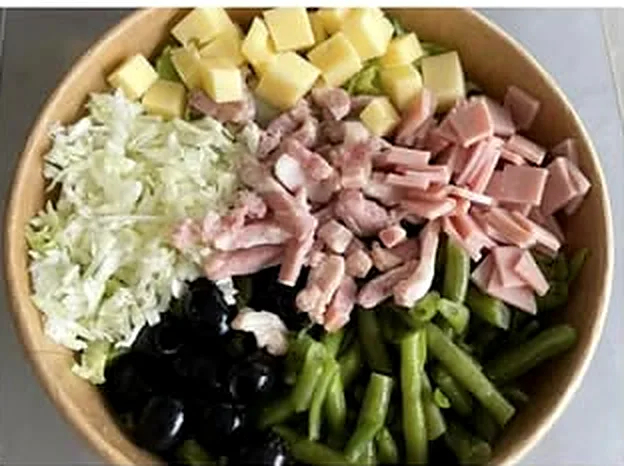
Saladerie & snacking · Saint-Louis
Salades à composer, burgers froids, wraps, sandwichs, pâtisseries et boissons, au 31 rue Pente Nicole à Saint-Louis.
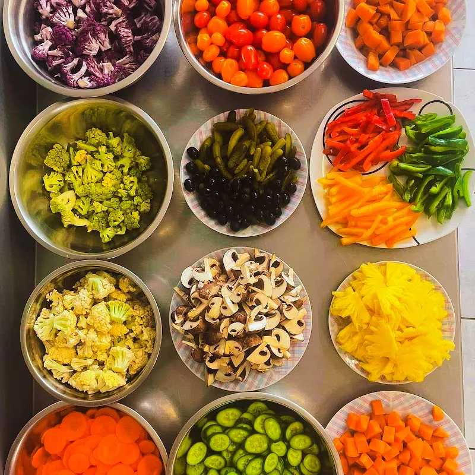
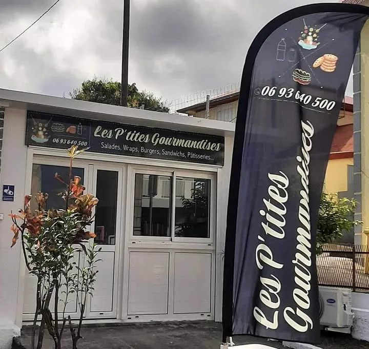
Cette semaine au comptoir
Chaque dimanche, un nouveau programme : un ingrédient à l’honneur, des quiches, un flan, un dessert et un topping pour vos salades.
Brocolis
Poulet / Tartiflette ou Brocolis / Pomme de terre
Coco
Cookies spéculoos
Amandes effilées ou graines de sésame noir
Programme publié le 15 novembre sur la page Facebook. Ici, il se met à jour en un instant, chaque semaine.
La carte
Une base, vos ingrédients préférés, un topping croquant : votre salade vous ressemble.

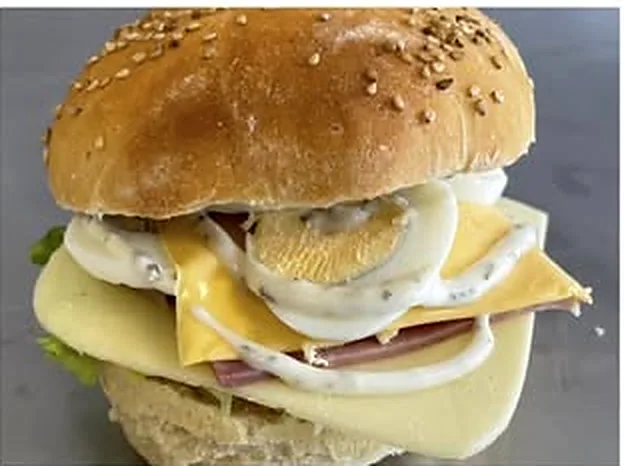
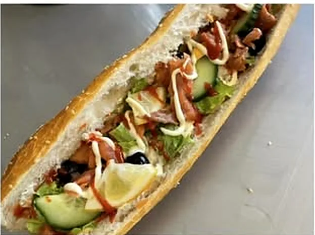
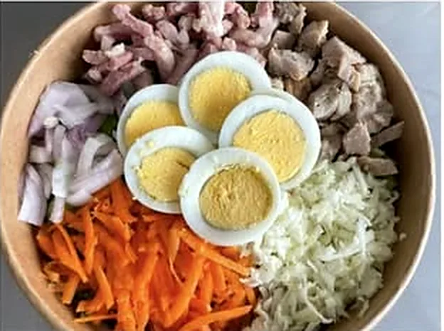
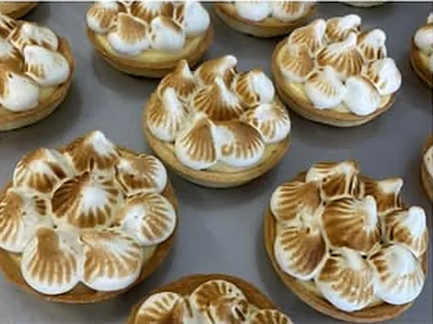
Commander
Votre salade, votre wrap ou votre sandwich, et un petit dessert du programme.
Au 0693 64 05 00 ou par message Facebook.
Votre commande vous attend au 31 rue Pente Nicole, à Saint-Louis.
Côté sucré
Muffins, cookies, tartelettes, flans : chaque semaine, une nouvelle douceur pour finir la pause.
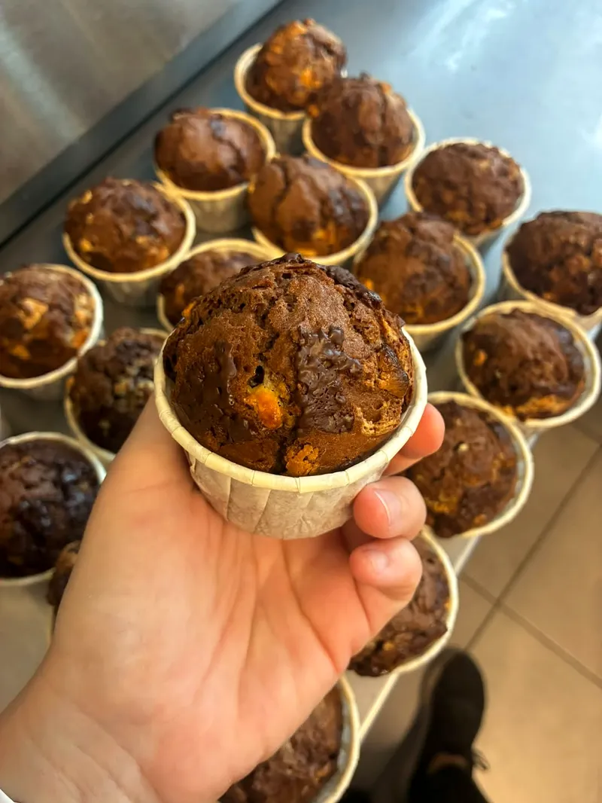
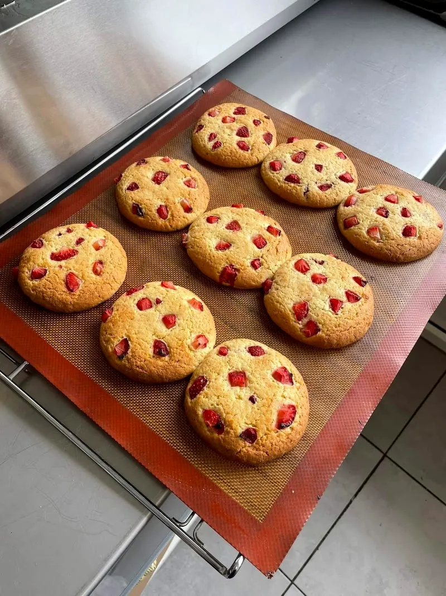
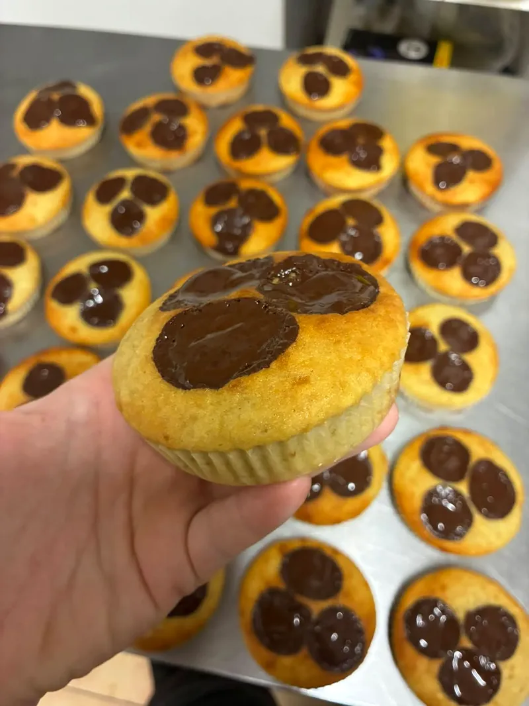
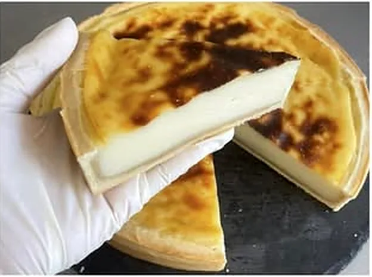
Faites glisser pour découvrir →
Nous trouver